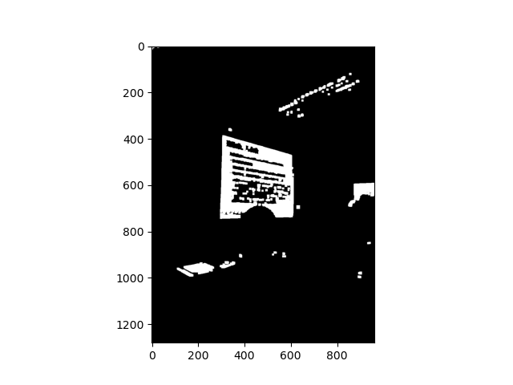

A Effective Algorithm
for Skew Correction
in Text Images
About Me
- NTUT IAE
- Free Software Lover
- Software Developer
- Music Composer
- wancat.cc
- zeko.studio
Motivation

Perspective Transform
Not very convenient
Need corner point detection
images are complicated,
so are the algorithm
Similar background
- User selects the corner points manually
- Program learns the "background"
- User switches to the next image
- Program detects the corners for user
Remove the slide
Calc histogram

Normalize
Binarize


Apply RGB mapping function

Apply erosion and dilation
Apply connected components

Find the nearest pixel to the corners